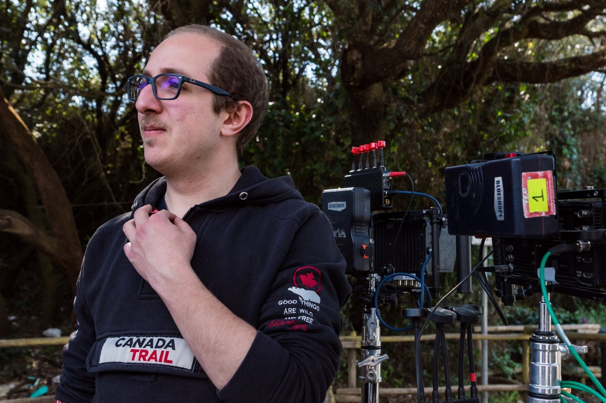

Un modo di vedere
Sono un regista e filmmaker interessato a tutto ciò che può trasformare un’immagine in un racconto. Lavoro su progetti audiovisivi, branded e cinematografici, muovendomi tra regia, riprese e montaggio. Mi interessa costruire immagini che abbiano un’identità, un ritmo e qualcosa da raccontare, più che semplicemente mostrare.
Il cinema e l’audiovisivo sono il centro del mio lavoro, ma il mio sguardo nasce anche dall’interesse per la storia dell’arte contemporanea e per il medium videoludico.
Cosa faccio
Regia · Videomaking · Video editing

Collaborazioni
- Associazione Sicurezza e Lavoro
- Camera dei Deputati
- Cinecittà
- Compagnia degli Istanti
- Cristian Rizzuti
- Daitona
- Euro Balkan Film Festival
- Fab Lab Pavone
- Fondazione Rubes Triva
- Giffoni Film Festival
- Julia Krahn
- Tantik
- Vertigo